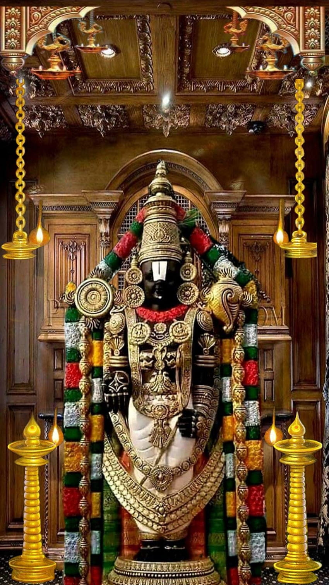
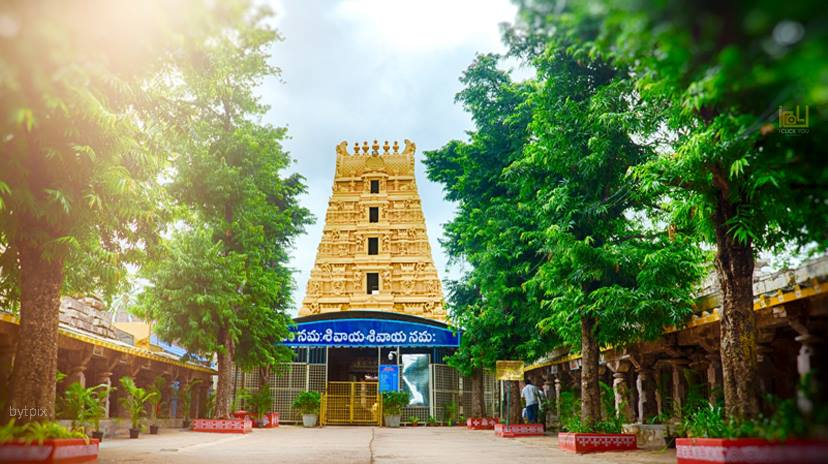
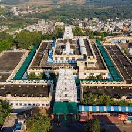
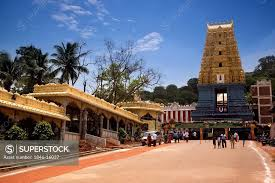

Famous Temples to Visit in AP
Tirupati is Famous for lord Sri Venkateswara
Venkateswara, an aspect of Vishnu, is the presiding deity of the Tirupati temple. It is believed that the deity is Swayambhu (self manifested). The deity possesses the power of the Trimurti: Brahma, Vishnu, and Shiva, and some sects believe that Venkateswara holds the power of Shakti and Skanda as well.

Kanipakam is Famous for lord Ganesha
The self-manifested idol of Ganpati of Kanipakam is the lord of justice himself. Interestingly, several people have been visiting the temple since a long time to resolve mutual strife by taking a dip in the sacred waters of the temple tank and swear before the idol of the deity.

Srisailam is Famous for lord Shiva
The temple at Srisailam is the ancient and sacred place of South India. The presiding deity of the place is Brahmaramba Mallikarjuna Swamy in natural stone formations in the shape of Lingam and is listed as one of the twelve Jyotirlingams existing in the country.

Annavaram is Famous for lord Satya Narayana swami
Annavaram is one of the most famous holy shrines enjoying popularity next to Tirupati. The temple is built in Dravidian style. The Lord Satyadeva with Anantha Lakshmi and Lord Shiva on other side took his abode on Ratnagiri.

Simhachalam is Famous for lord Lakshmi Narasimha Swami
Dedicated to Lord Vishnu, who is worshipped here as Varaha Narasimha, the temple is one of the most important shrines of South India that is visited by millions of devotees every year. The grand temple resembles a fortress and has three outer courtyards and five gateways.

visit Google